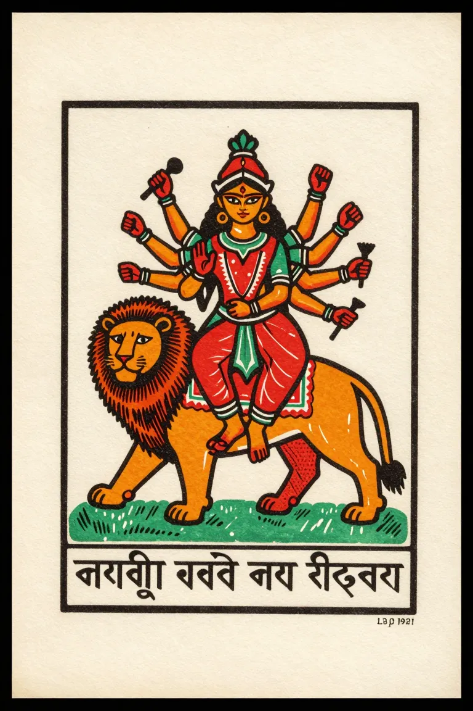

Et billig tresnittark fra Battala, basarkvartalet i Calcutta. Lokale håndverkere skar en dristig sort kontur, ofte etter en malt original, og trykket den med type på tynt landspapir.

Kjerneidé
En billig tretavle med en dristig linje kan legge en hellig eller komisk historie i hendene på en basarmengde.
Designprinsipper
Skjær en sterk, jevn kontur i tre og hold linjen 0,5 til 1,5 mm bred.
Fyll store former med flat farge, lagt på for hånd eller med en andre blokk.
Vis guder, landsbyscener og bysatire, med hovedfiguren i midten.
Trykk verset eller tittelen med bengalsk type på samme ark.
Bruk tynt landspapir og ikke skjul fibrene.
Hold skraveringen kort og sparsom, i stil med et europeisk tresnitt som skjæreren hadde sett.
Godta en tykk linje, en klatt og et skift på 1 til 2 mm mellom sort og farge.